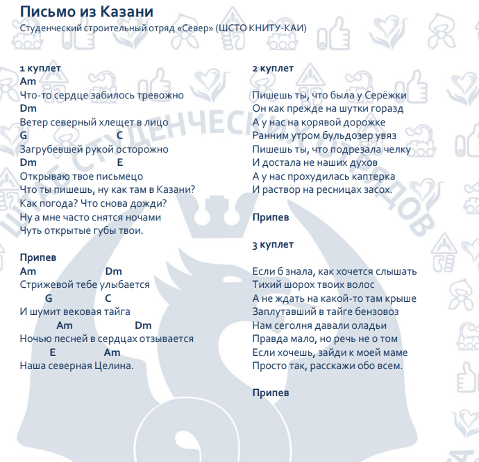

Перебор восьмёрка, как в Алёнке. Напоминание: бас-3-2-3-1-3-2-3
Аккорды в куплете Am Dm - две восмьёрки(в смысле перебора), G C Dm E - по одной восьмёрке. В конце куплета E играется ещё раз.
Аккорды в припеве Am Dm G C, потом Am Dm E Am. Всё по одной восьмёрке
После второго куплета начинается бой. В куплете играется восьмёрка, в припеве, который играется дважды кстати, шестёрка. Здесь уже будет C/E, то есть разделить C и E(↓↓↑ каждый)
